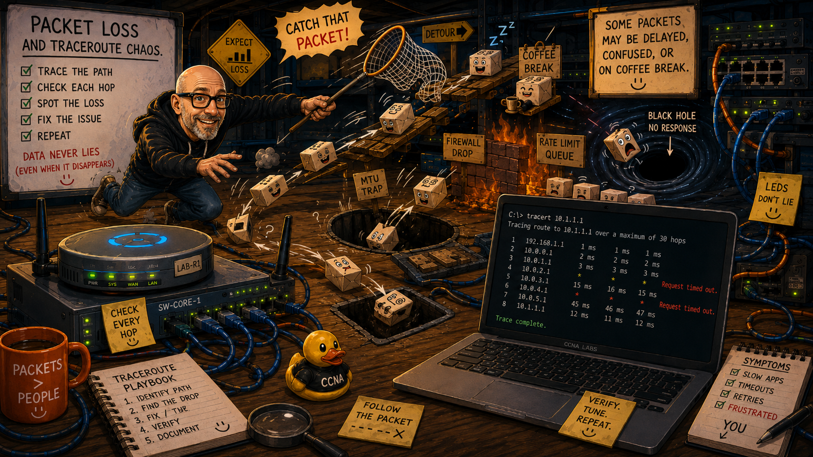

My approach to learning networking combines structured courses with practical configuration, troubleshooting and documentation. The aim is not simply to recognise CCNA concepts, but to understand how they affect the behaviour of an actual network.

Current study plan
I am currently building my networking knowledge through a combination of structured training, vendor documentation and hands-on lab work.
- NetworkChuck Academy — Summer of CCNA programme
- Jeremy’s IT Lab — structured CCNA course and practical lab exercises
- Cisco official documentation — configuration references, protocol behaviour and platform-specific information
- Hands-on lab practice — primarily Cisco Packet Tracer, Cisco IOS CLI and increasingly larger multi-technology scenarios
- Independent documentation — recording configuration, verification, failures and troubleshooting in this portfolio
Study approach
I have found that networking concepts become much easier to retain when theory is followed immediately by practical use.
- Learn the concept — work through a structured lesson or technical explanation.
- Summarise the important points — reduce the subject to the behaviour, terminology and commands that matter.
- Build it — configure the technology in a practical lab rather than relying entirely on theoretical understanding.
- Verify it — use show commands, connectivity tests and protocol state to prove that the configuration behaves as expected.
- Break and troubleshoot it — investigate mistakes and unexpected behaviour rather than immediately rebuilding the configuration.
- Document the result — record the configuration, evidence, problems encountered and lessons learned.
- Revisit the subject — use repetition and mixed troubleshooting exercises to strengthen recall.
Develop strong networking fundamentals aligned with the CCNA while building the practical troubleshooting habits needed to understand why a network works — or why it does not.
Core learning resources
Cisco Learning Network
Cisco's official learning community provides information around certification topics, technical discussions and study resources.
Cisco documentation
Cisco documentation is particularly useful when I want to move beyond remembering a command and understand exactly how a feature is intended to behave.
I use it for areas including:
- IOS command syntax and options
- configuration examples
- protocol behaviour
- platform-specific implementation details
- verification and troubleshooting commands
Video and structured learning
NetworkChuck Academy — Summer of CCNA
The Summer of CCNA programme provided a broad introduction to the technologies covered by the certification and helped establish the foundation for the practical work documented in this portfolio.
The emphasis on accessible explanations and community participation provided a useful starting point before moving into deeper technical study and independent lab work.
Jeremy’s IT Lab
Jeremy’s IT Lab provides a highly structured progression through the CCNA objectives, supported by Packet Tracer labs, configuration exercises and repeated review.
I use it particularly for strengthening technical depth and revisiting subjects where I want more repetition or a more detailed explanation.
How the resources fit together
Concept introduction
Structured teaching provides the first explanation of a technology and the problem it is intended to solve.
Technical depth
Cisco documentation and detailed course material help clarify behaviour, configuration and protocol operation.
Practical application
Packet Tracer and CLI labs turn individual concepts into working network configurations.
Portfolio evidence
The labs in this repository document implementation, troubleshooting, verification and lessons learned.
Tools and simulators
Cisco Packet Tracer
Packet Tracer is currently the primary environment I use for building repeatable Cisco network scenarios.
It allows me to practise configuration and troubleshooting across switching, routing, network services, security and IPv6 without requiring equivalent physical hardware for every topology.
Visual Studio Code
VS Code is the main environment I use to maintain the portfolio and repository.
- writing and editing lab documentation
- working with Markdown, HTML and CSS
- managing the local Git repository
- reviewing configuration output and notes
Git and GitHub
Git and GitHub provide the version-control and publishing workflow behind the project.
- tracking changes to labs and documentation
- maintaining a history of the project
- organising networking exercises by subject
- publishing the portfolio through GitHub Pages
Why document the learning process?
The portfolio is deliberately more than a collection of successful configurations.
Recording mistakes, verification commands and troubleshooting steps makes it possible to look back at how my understanding has changed. It also forces me to explain what a configuration is doing rather than treating a successful ping as sufficient evidence that I understand it.
That distinction has become increasingly important as the labs have moved from isolated commands into networks where switching, routing, services and security controls interact.
THE LONG-TERM GOAL
Build enough technical understanding that configuration commands are the result of understanding the network rather than a set of steps remembered from a lesson.
CCNA certification is an important milestone, but the larger objective is to develop practical networking knowledge that can continue to be built upon afterwards.
Related portfolio sections
- Learning Journal — how my approach and troubleshooting skills have developed.
- Networking Labs — practical implementation and troubleshooting evidence.
- Study Notes & Quick Reference — frequently used IOS and host troubleshooting commands.